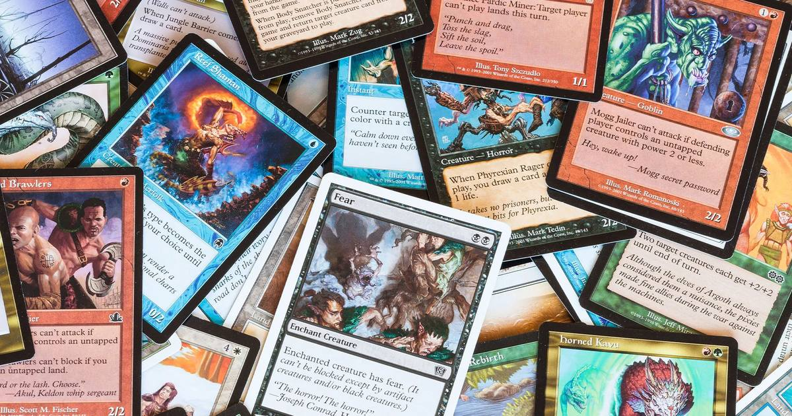

Wizards Seeks Up to $28.65M Over Fake Magic Cards
Wizards of the Coast filed a 97-page federal lawsuit against a Utah printing operation it says sold counterfeit Magic: The Gathering cards disguised as proxies, seeking up to $28.65 million in statutory damages.

Disclosure: this post contains affiliate links. I earn a commission on qualifying purchases.
Wizards of the Coast is going to war over fake Magic cards — and the number attached to the fight is massive.
The company filed a 97-page federal lawsuit on November 23, 2026 in the U.S. District Court for the Western District of Washington, accusing a Utah printing operation called PrintMTG Enterprise of running a counterfeit-card ring disguised as a proxy business. Wizards is seeking up to $28.65 million in statutory copyright damages.
What Wizards alleges
The complaint names Ryan James Dunn and other defendants, who Wizards says run a print shop in Springville, Utah behind a network of differently named websites. The cards were sold as "proxies" — stand-in cards players print to test decks or play casually — but Wizards says they were made to be mistaken for the real thing.
That distinction is the whole case. Proxies are a normal, widely accepted part of Magic: a clearly marked stand-in for a card you don't own yet. A counterfeit, in Wizards' definition, is made to be mistaken for a real card and to take its place as something owned, traded, or sold. The suit quotes PrintMTG's own ProxyKing.biz site against it: "At Proxy King we try to make our proxies as realistic as possible. This lets you join games and play without people noticing you are running proxy cards in your Magic deck."
The complaint's own language is blunt: "They intend that the people who encounter their product after the sale, including opponents, judges, retailers, and later purchasers, will mistake it for Wizards' genuine product."
How far the copying allegedly went
The filing covers 191 Magic sets, including 46 designs from Limited Edition Beta (1993), 20 from the original Zendikar, and 68 from Modern Horizons 2. Wizards says the operation copied card backs as well as faces — and on rares and mythic rares, reproduced the security hologram, right down to the trademark printed inside it.
The alleged operation went beyond cards. The suit says the same network sold fake Pokémon cards and Lego minifigures, ran an Etsy storefront offering Pokémon proxies, and operated sticker-selling sites — YouStickers.com and CustomStickers.com — that Wizards alleges were used to launder money from the card sales. It also accuses the group of hijacking website domains: one site, KrakenOpus.com, was a luxury publishing operation whose domain was turned into an MTG news site with links directing visitors to a proxy-printing site.
The charges
The complaint brings claims including copyright infringement, trademark counterfeiting and trademark infringement, a civil RICO claim alleging mail fraud, wire fraud, and money laundering, and a violation of the Washington Consumer Protection Act. Beyond the damages figure, Wizards is asking the court to shut the operation down, seize the printing equipment, and order the defendants to stop.
The statutory math behind the headline figure: on the copyright claims alone, Wizards says it could recover up to $150,000 per work for willful infringement. Across 191 works, that is where the maximum comes from. It is a ceiling, not a guaranteed payout — and the defendants had not publicly responded to the allegations as of this writing.
Why this one matters
Wizards has sued over counterfeits before, but this case is different in scope: a whole alleged enterprise, not a single seller, with its own storefronts, domains, and laundering infrastructure. And the timing matters for players. Realistic fakes have been circulating on eBay, Temu, and other marketplaces for years, largely unchecked — and every fake that enters the singles market undercuts both retailers selling real sealed product and players who might pay real-card prices for a forgery.
If Wizards prevails, the case could become the template for future litigation against other proxy printers who cross the line from stand-in to forgery. The message to the proxy community is narrow but clear: Wizards is not suing over proxies themselves. It is suing over cards designed to pass as real.
Watch
Source: Wizards of the Coast suing Utah family over alleged counterfeit Magic: The Gathering cards — KIRO 7. A local news report on the federal lawsuit filed by the Renton-based company against the Utah family behind the alleged counterfeit-card operation.